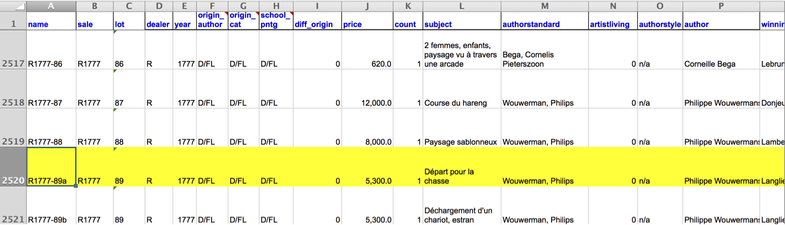

The Language and Fitting of Models
Data Science in a Box
Cornell College
DSC 223 - Fall 2022
October 11th, 2022
Modelling
- Use models to explain the relationship between variables and to make predictions
- For now we will focus on linear models (but remember there are many many other types of models too!)


Auctions back in the day

Paris auction market

Départ pour la chasse

Auction catalog text

Two paintings very rich in composition, of a beautiful execution, and whose merit is very remarkable, each 17 inches 3 lines high, 23 inches wide; the first, painted on wood, comes from the Cabinet of Madame la Comtesse de Verrue; it represents a departure for the hunt: it shows in the front a child on a white horse, a man who gives the horn to gather the dogs, a falconer and other figures nicely distributed across the width of the painting; two horses drinking from a fountain; on the right in the corner a lovely country house topped by a terrace, on which people are at the table, others who play instruments; trees and fabriques pleasantly enrich the background.



Heights

Widths

Height as a function of width

… without the measure of uncertainty

… with different cosmetic choices

Other smoothing methods: gam

Other smoothing methods: loess

Residuals

ht_wt_fit <- linear_reg() %>%
set_engine("lm") %>%
fit(Height_in ~ Width_in, data = pp)
ht_wt_fit_tidy <- tidy(ht_wt_fit$fit)
ht_wt_fit_aug <- augment(ht_wt_fit$fit) %>%
mutate(res_cat = ifelse(.resid > 0, TRUE, FALSE))
ggplot(data = ht_wt_fit_aug) +
geom_point(aes(x = Width_in, y = Height_in, color = res_cat)) +
geom_line(aes(x = Width_in, y = .fitted), size = 0.75, color = "#8E2C90") +
labs(
title = "Height vs. width of paintings",
subtitle = "Paris auctions, 1764 - 1780",
x = "Width (inches)",
y = "Height (inches)"
) +
guides(color = "none") +
scale_color_manual(values = c("#260b27", "#523178")) +
geom_text(aes(x = 0, y = 150), label = "Positive residual", color = "#e6b0e7", hjust = 0, size = 8) +
geom_text(aes(x = 150, y = 25), label = "Negative residual", color = "#260b27", hjust = 0, size = 8)Question
The plot below displays the relationship between height and width of paintings. The only difference from the previous plots is that it uses a smaller alpha value, making the points somewhat transparent. What feature is apparent in this plot that was not (as) apparent in the previous plots? What might be the reason for this feature?

Multiple explanatory variables
How, if at all, does the relationship between width and height of paintings vary by whether or not they have any landscape elements?

ggplot(data = pp, aes(x = Width_in, y = Height_in, color = factor(landsALL))) +
geom_point(alpha = 0.4) +
geom_smooth(method = "lm", se = FALSE) +
labs(
title = "Height vs. width of paintings, by landscape features",
subtitle = "Paris auctions, 1764 - 1780",
x = "Width (inches)",
y = "Height (inches)",
color = "landscape"
) +
scale_color_manual(values = c("#E48957", "#071381"))Extending regression lines

ggplot(data = pp, aes(x = Width_in, y = Height_in, color = factor(landsALL))) +
geom_point(alpha = 0.4) +
geom_smooth(method = "lm", se = FALSE,
fullrange = TRUE) + #<<
labs(
title = "Height vs. width of paintings, by landscape features",
subtitle = "Paris auctions, 1764 - 1780",
x = "Width (inches)",
y = "Height (inches)",
color = "landscape"
) +
scale_color_manual(values = c("#E48957", "#071381"))Goal: Predict height from width
\[\widehat{height}_{i} = \beta_0 + \beta_1 \times width_{i}\]


Correlation does not imply causation
Remember this when interpreting model coefficients

Visualizing residuals

Visualizing residuals (cont.)

Visualizing residuals (cont.)

Relationship between height and school
# A tibble: 7 x 5
term estimate std.error statistic p.value
<chr> <dbl> <dbl> <dbl> <dbl>
1 (Intercept) 14.0 10.0 1.40 0.162
2 school_pntgD/FL 2.33 10.0 0.232 0.816
3 school_pntgF 10.2 10.0 1.02 0.309
4 school_pntgG 1.65 11.9 0.139 0.889
5 school_pntgI 10.3 10.0 1.02 0.306
6 school_pntgS 30.4 11.4 2.68 0.00744
7 school_pntgX 2.87 10.3 0.279 0.780 - Austrian school (A) paintings are expected, on average, to be 14 inches tall.
- Dutch/Flemish school (D/FL) paintings are expected, on average, to be 2.33 inches taller than Austrian school paintings.
- French school (F) paintings are expected, on average, to be 10.2 inches taller than Austrian school paintings.
- German school (G) paintings are expected, on average, to be 1.65 inches taller than Austrian school paintings.
- Italian school (I) paintings are expected, on average, to be 10.3 inches taller than Austrian school paintings.
- Spanish school (S) paintings are expected, on average, to be 30.4 inches taller than Austrian school paintings.
- Paintings whose school is unknown (X) are expected, on average, to be 2.87 inches taller than Austrian school paintings.